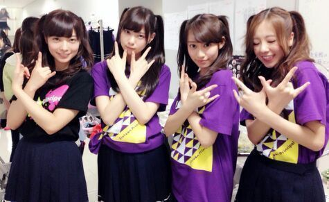

| 2014/06 02 Mon | 〜プリンシパル☆ 残り 17 公演 〜 川村まにだよ。 |
おはよ-ございます＼(^o^)／
皆さん お元気してますか？
今日 久しぶりに外に出てみたら
結構な暖かさに驚きました..*
プリンシパル期間は ずっと箱の中にいるので
気温の変化がいまいちわからないんですよね.♪
でも最近 NEWSでも熱中症注意など聞きますし、皆さんも本当に気を付けてくださいね ><
私も気を付けます ^^
そして、三日目のプリンシパルの結果は
昼の部は「ポリン」とゆう役に立候補しましたが、惜しくも駄目でした、、、、ふぁ〜(´；ω；｀)
そして、夜の部...「ポリン」にリベンジしました><
さゆにゃんがいきました！ そりゃあ悔しい気持ちはあります。でも 皆がやりたい役できるのが一番幸せなので、楽屋に戻って、すぐメイクさん達が居る部屋にお邪魔させてもらって、そこのTVで さゆにゃんが頑張ってる姿を 見ていました*^^*
でも「メグ」役に選んでもらえました。
メグやってて面白かったです.♪
だって、舞台に出て行っただけで皆が笑ってくれたから
嬉しゅうキモチやあ〜
 って思いました。
って思いました。
お稽古をずっとやってきた中で、
ポリン等をできるメンバーは限られていたんです。
やっぱ セリフや段取り 覚えることがたくさんあったので。 でも何でか分からないですけど、一番最初に完璧に覚えた役が ポリンでした。
私みたいな人間、2幕でポリンをやっていいか分からないけど、残りある公演の中でまた 立候補させてくださいm(._.)m
他にもキャサリン、エルザ、ルイーダ、ロザリオ...と色々やりたい役もあるんですけどね＼(^o^)／
そして見てください *^^*
ハーフツイン。笑

れいかと ななせと ハーフツインをしよう☆となって、
ゆうりやひめかや生駒も やってくれました*^^*
これで3幕に出たのですが、
幕があがった瞬間 おもわずふいてしまいました )))
すみません。 恥ずかしくって、、
終わったあと、そのことをななせに言ったら
「なあは 逆にめっちゃぶりっこして歌った」って言われて、「ぉお〜、流石だ!」と思いました\*^^*/
れいかなんて、2幕に出てくる あるヤツに似てるっていじられてましたしね*^^*笑
でも、本当に気合いが入って 3幕すごい元気に踊ってる出てる私たちがいました。 また皆でやろう!!!!
乃木Tシャツ。

ぁあ、髪の毛 もう少し暗くしたいなぁ〜♪
でも美容院の人はいつも「まひろちゃんは ある程度明るい方がいいよ！」って言って、ほんのちょびっとしか暗くしてくれな〜い、ほしてすぐに髪色戻って明るくなっちゃうパターンなんですよね

また行けるタイミングで 美容院行ってきます！
あっ、今日は久しぶりのお休みかと思ったらがっつりお仕事入ってました！ 頑張ります(#^.^#)
皆のこと LOVEだよ。
のし。DDDDDD... ちー ずー じょー メロ まに。笑
コメント(200)
2014/06/02 12:54